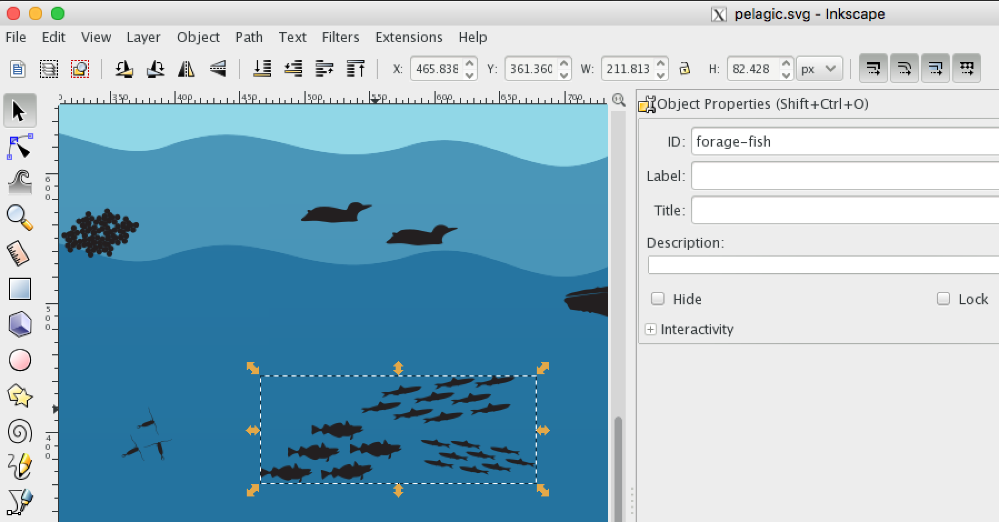

Condition Report metrics to inform on National Marine Sanctuaries status using interactive infographic approach to displaying habitat-based elements that link to time series data. Proposed by Jenn Brown (2016).
The process is fairly straightfoward to integrate:
habitat illustration: vector rendering of habitat with elements (species or other)
data pages: timeseries plots or maps of data
Please visit Help & Documentation for MBON - Applications - Interactive Infographics for more background.
*.ai) using the free Inkscape program that natively uses scalable vector graphics (*.svg) format:
add ID to element or group of elements:
save to folder svg/*.svg as “Plain SVG” (such as svg/pelagic.svg)
Add rows to the svg/paths.csv:
| habitat | status_path | status_color | status_text | link_path | link | link_title |
|---|---|---|---|---|---|---|
| pelagic | path#whales | red | decreasing | path#whales | ./pages/pinnipeds.html | Whales |
| pelagic | g#forage-fish path | green | increasing | g#forage-fish | ./pages/pinnipeds.html | Forage Fish |
| kelp-forest | path#otter | purple | stable | path#otter | ./pages/pinnipeds.html | Sea Otters |
path#element (eg path#whales) for single element, or g#element path for grouped elements (eg g#forage-fish path)path#element (eg path#whales) for single element, or g#element for grouped elements (eg g#forage-fish)Create a new habitat.Rmd page:
pelagic.Rmd) and save as new *.RmdUpdate parameters at top of page to reflect the filter to the
---
title: "Kelp Forest"
params:
svg: "./svg/kelp-forest.svg"
filter: "kelp-forest"
---Build Website. There’s either a button in RStudio under the Build tab, or you can use the R command:
rmarkdown::render_site()The website gets built into the docs/ folder.
Push to website. This repository uses Github Pages:
Populate California example, using available ERDDAP-connected timeseries from IEA - California Current
Populate Florida Keys NMS, working in particular with people at FKNMS (Mike Buchman, Steve Gittings) and FL MBON (Megan Hepner)
Copyright © 2016 Marine Biodiversity Observation Network & NOAA National Marine Sanctuaries.